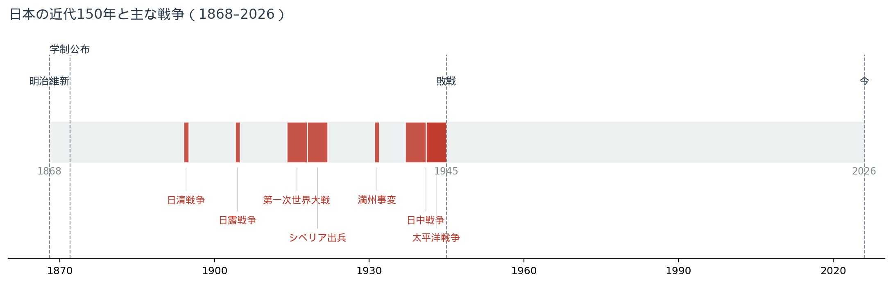
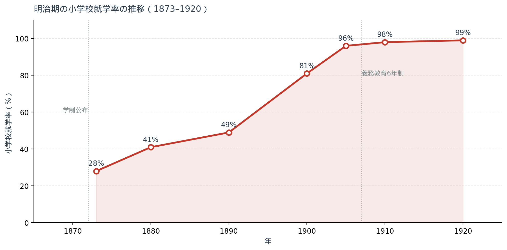
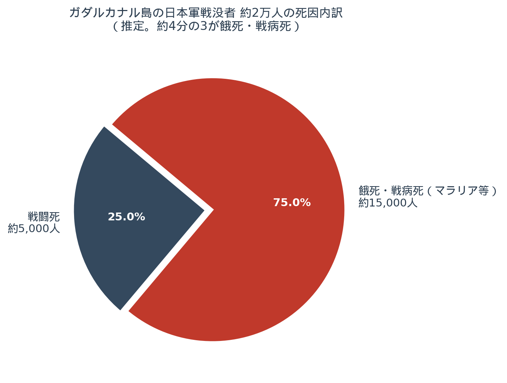
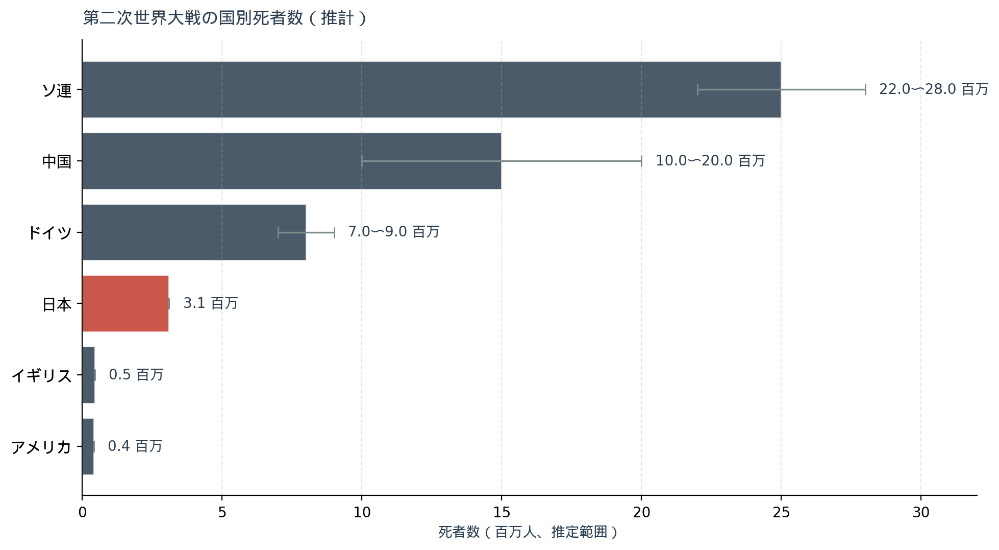
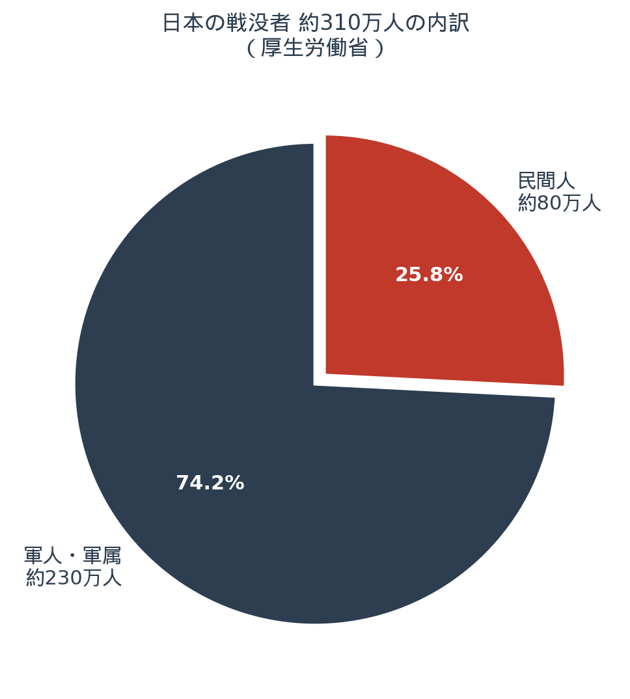

「皆さん、もしもの話なんですけれど、戦争って簡単に口で言うけど、戦争って何でしょう？」2026年5月9日、我孫子教室20周年特別講座より
はしがき ── 我孫子教室の保護者の皆さんへ
このたびは我孫子教室20周年特別講座にお越しいただき、本当にありがとうございました。当日は3時間という長い時間にもかかわらず、最後までお付き合いくださって、心より感謝申し上げます。
これは、その日にお話ししたことを、もう一度ゆっくりと文字でなぞり直したものです。皆さんが帰り道や夕食の食卓で「あの話、子どもにどう伝えたらいいんだろう」と思いを巡らせてくださったその余韻に、もう一度寄り添いたくて、こうして手紙の形で書き起こしてみました。
ただ、最初にお断りしておきたいことがあります。この手紙は、何かの結論を皆さんに押しつけるためのものではありません。私は教育者の端くれですから、特定の政治的立場に立っているつもりもありません。左でも右でも、ありません。ただひとつ、「本当のことを知っておきましょうね」という、それだけのことを、これからお伝えしようとしています1。
第一章 ── 戦争はもう「別世界の出来事」ではなくなりつつある
父の話、夜中の3時
私の父は、中国の戦線に行った人間です。
子どものころ、私が小学生だったある夜、父は私を起こして、夜中の3時から朝の5時まで、戦争の話を続けました。日本の歩兵銃の話。アメリカ兵の自動小銃の話。誰がどの方向から撃ってきたかという話。「明日、学校なんだけどなあ」と思いながら、私は布団の中でじっと聞いていました。
そのときの後遺症だと思うのですが、私は今でも明け方の3時を過ぎないと眠れない体質になっています。塾の先生という、夜の遅い仕事しかできなかった理由のひとつは、たぶんここにあるのでしょうね（笑）。
ただ、父があんなふうに、子どもを叩き起こしてまで何かを話さずにいられなかったその気持ちを、私は当時よくわかりませんでした。それを少しわかるようになったのは、ずっと後になってからのことです。後の章で、もう一度この話に戻ります。
80年、私たちは戦争をしていない
第二次世界大戦が終わったのが1945年。それから80年あまり、日本はこの国として一度も戦争をしていません。
これは、世界史的に見ても、たいへん珍しいことです。
問題は、戦争を知っている世代が、いま、ほとんどいなくなりつつあるということです。私の父の世代はもちろんもう亡くなっています。私自身、戦争の話は父から聞いただけで、戦場を見たわけではありません。皆さんやお子さんから見れば、戦争はテレビの中の遠い出来事、ニュース映像の向こう側の話でしょう。
私は2026年の今、それが少し心配なのです。
世界では、ロシアとウクライナの戦争が続いています。中東でも戦闘が止まりません。アジアでも、台湾海峡や朝鮮半島をめぐる緊張が、報道のたびに高まっているように見えます。日本の政府も、憲法改正、敵基地攻撃能力、集団的自衛権という言葉を、ここ何年も繰り返しています。
もちろん、私はそれが直ちに戦争につながると言いたいのではありません。けれども、「戦争は別世界の出来事」と切り捨てるには、そろそろ難しい状況が、近づきつつあるように思えるのです。
そして私が、いちばん危惧していること
そういう状況の中で、私がいちばん危惧していること。
それは、私たち日本人が、自分たちのやった戦争について、あまりにも真実を知らなすぎるのではないかということです。
学校の教科書をひもといてみてください。「1937年に日中戦争が始まり、1941年に太平洋戦争が始まり、1945年に終わった」── そういう年表的な記述はあります。けれども、誰がどういう意図でこの戦争を引き起こしたのか、陸軍と海軍はどう連携できなかったのか、政府と軍部はどんな関係だったのか。そこには、ほとんど踏み込まれていません。
同じ敗戦国のドイツは違います。ドイツは小学校の段階から、一年間ぶっ通しで「あの戦争はどういう戦争で、ナチス政権がいかに世界に悲劇をもたらしたか」を教えるそうです。「二度とナチスのようなものが出てこないように」という、徹底した教育がそこにある2。
日本にそれはあるでしょうか。皆さんは小学校で、中学校で、一年間ぶっ通し戦争の原因について掘り下げる授業を、受けたことがあるでしょうか。私はあまり聞いたことがありません。
そして気になっているのは、最近のSNSや一部の政治家の発言の中に、「日本は戦争で何ひとつ悪いことはしていない、あれは自衛のための戦争だったんだ」という言説が、はっきりと出てきていることです。
それを信じてしまう若い人たちが、確実に増えてきているように見える。これが、私のいちばんの心配ごとです。
私は教育者の端くれですから、繰り返しますが、特定の政治的立場に立つつもりはありません。ただ、「本当のことを知っておきましょうね」という、それだけのことなのです。
そのために、いまから少し長い話を始めさせてください。
第二章 ── 戦争とは何か
戦争という不思議な営み
「戦争」と一口に言いますが、皆さん、戦争のイメージってどんなものでしょうか。人を殺すこと？ 成果を見ていくこと？
考えてみると、これは不思議なことなんです。
いま、たとえば私が誰か一人を殺したとします。そうすれば私は警察に捕まります。下手をすれば死刑かもしれません。「人殺し」というのは、私たちの社会で一番悪いこととされているわけです。
ところが戦争では、敵をたくさん殺せば英雄になる。勲章をもらう。
不思議じゃないですか。変ですよね。
クラウゼヴィッツの定義
戦争を最初に体系的に定義した人は、19世紀ドイツのカール・フォン・クラウゼヴィッツという人で、『戦争論』という有名な本を書きました。私も若いころに読もうとしたんですが、なんだか退屈で20ページくらいでやめてしまいまして（笑）、これは皆さんにあまり強くお勧めできないんですけれども。
ただ、彼が言ったことの核心は、いまも色あせません。
戦争とは、政治の延長線上にあるものである。
つまり、政治の極端な一形態が戦争である、ということです。「戦争は嫌だ、暴力を振るうのは嫌だ」と言うだけでは、本当は足りないんですね。あれは「政治」なのだから、政治外交の延長線上に位置づけて考える必要がある3。
「暴力装置」という用語
軍事組織のことを、専門用語で「暴力装置」と呼びます。「装置」というのは機械という意味ではなくて、社会学・政治学の用語です。
警察も「暴力装置」と呼びます。これは何かをひどく言っているのではなく、「合法的に物理的強制力を行使することを許された組織」という意味の、単なる用語なんですね。マックス・ウェーバーまで遡る古典的な分類です4。
そして、ここがいちばん大事なところなんですが、どこの国の政治家も、戦争を始めるときに「相手の国を滅ぼしたいから」とか「領土が欲しいから」と言って始めることは、絶対にありません。
古代から現代まで、戦争を仕掛ける側はみんな、こう言うんです。
これは自衛のための戦争である。
自由と平和と安全のために、やむを得ず始めるのである。
これは、ロシアのプーチン大統領もそう言っています。アメリカのトランプ大統領もそう言っています。日清戦争のときの日本もそう言いましたし、太平洋戦争のときの日本もそう言いました。
「自衛」という言葉が出てきたとき、私たちは、一度立ち止まって、その言葉の中身を吟味する習慣を持ったほうがよさそうだ、と私は思っています。
戦争はいつから始まったのか
そもそも、人間はいつから戦争をしているのでしょうか。
原始時代、私たちが動物を追いかけて暮らしていたころ、同じ人間同士の組織的な殺し合いというのは、それほど多くなかったと考えられています。皆、動物を追って走り回るのに忙しかった。
戦争が始まったのは、おそらく、定住生活が始まってからです。
人間は農業を覚えた。これを「農業革命」と呼びます。動物を追いかける必要がなくなり、町ができ、人口が増え、指導者が現れる。そして食物が「蓄えられる」ようになる。富の蓄積です。
ここから格差が生まれます。良い土地に住んでいる部族は豊かになる。砂漠の真ん中の部族は飢える。飢えた人たちは、生きるために略奪をする。略奪される側は、防衛のために塀を築く。万里の長城も、北方の遊牧民を遮断するために築かれたものですね。
ここで初めて、組織的な「軍隊」が生まれます。普段は農民でも、いざとなれば武器を取って戦う集団。これが、せいぜい1万年か7000〜8000年前のことだと言われています5。
欲と恐怖
戦争が起こる原因は、心理的に見れば、ふたつしかないと私は思っています。
ひとつは「欲」。
もうひとつは「恐怖」です。
「欲」はわかりやすい。豊かな土地を奪いたい。資源を手に入れたい。極端にいえば、相手を皆殺しにすれば、その領土はまるごと自分のものになる、という発想です。
そして、いったん豊かな領土を手に入れると、次は「恐怖」が出てきます。これを誰かに奪われたらどうしよう。隣の国が軍備を増強しているらしい。じゃあこちらも増強しよう。すると相手はそれを見てまた増強する。こちらもまた、と続いていく。
これを、軍事用語で「エスカレーション」と呼びます。
戦争の準備が始まると、なかなか止まりません。最後はどうなるかというと、「いまのうちに先にやってしまったほうがいい」という発想に至ります。
これが「先制攻撃」です。
国際法では、先制攻撃は禁止されています。エスカレーションがどう始まり、どう破綻するか、20世紀までに人類は身をもって学んできたからです。けれども、ロシアもアメリカも、その「禁止」を実際には無視している場面がある。これが2026年現在の世界の姿です。
そして、日本もまた、憲法を変えないまま、敵基地攻撃という言葉に少しずつ舵を切ろうとしています。
ミサイルが飛んでくるとき、それを撃ち落とす「迎撃」までは現行憲法でも問題ありません。けれども、ミサイルは何百発も同時に飛んできます。撃ち落とせない。だったら相手のミサイル基地を叩こう、という議論になるわけですが、それは「相手の領土を攻撃する」ことを意味します。
これは現行憲法では認められていません。だからこそ、政府は「集団的自衛権」「敵基地攻撃能力」「反撃能力」といった、さまざまな言葉を使って、なんとか辻褄を合わせようとしている。最終的には「やっぱり憲法改正が必要だ」という方向に進めようとしている。
近い将来、私たち国民は、憲法改正の是非を国民投票で問われることになる可能性があります6。
国民投票するからには、まず「知っておかなければならないこと」がある。本当はこれを国民的議論として広く展開すべきなのですが、その議論は、まだ十分に行われていない。だから私はこういう場で、細々と、健気にやっているのです（笑）。
第三章 ── 日本の近代150年と「戦争80年」
1868年から、ちょうど半分が戦争
1868年、明治維新が起こり、江戸幕府が終わって日本は近代に入ります。それからもう150年あまり経ちました。
少し残酷な事実をお伝えしますね。
この150年のうち、約半分にあたる80年間、日本は戦争をしていました。

日清戦争（1894–95）、日露戦争（1904–05）、第一次世界大戦への参戦（1914–18）、シベリア出兵（1918–22）、満州事変（1931–32）、日中戦争（1937–45）、太平洋戦争（1941–45）── 私たちの祖父母、曾祖父母の人生は、戦争に取り囲まれていたのです7。
私の祖母は、よくこんな話をしてくれました。
「おばあちゃん、日露戦争を覚えてる？」と私が聞くと、即座に「覚えてる」と答え、当時14歳だったと言って、その場で歌を歌い始めたのです。日露戦争の流行歌、乃木希典将軍をたたえる歌でした。日本が勝ったので、家の前を提灯行列が通っていったと。
そして、その祖母の息子、つまり私の父の世代になると、今度は本人たちが戦争に行く番になります。
何のために、近代化を急いだか
なぜ日本は、明治維新からこんなに急いで近代化に向かったのでしょうか。
明治政府が見ていたのは、東アジアの惨状でした。
ベトナムはフランスの植民地。インドはイギリス。フィリピンはアメリカ。インドネシアはオランダ。そして当の中国（清）は、列強が切り取り合戦のように租界を作って、虫食い状態です8。日本だけがまだ無事でいられたのは、ほとんど偶然のようなものでした。
「このままだと日本もやられる」── そういう危機感が、明治政府の原動力でした。
岩倉使節団（1871–73）でヨーロッパとアメリカを視察した政府高官たちが、ロンドンで地下鉄が走り、ガス灯が街を照らしているのを見て、本気で衝撃を受ける。日本は、まだ馬と人力車の国でした。「こんな国と戦争なんかできるわけがない」と、大久保利通も伊藤博文も、思ったはずです9。
そこから、日本は「追いつけ追い越せ」の近代化に全速力で走り出します。
第四章 ── 学校はなぜ生まれたのか
その近代化政策のなかで、いまの私たちの暮らしにいちばん深く根を下ろしたのは、おそらく学校です。
明治政府は、1872年に「学制」を公布し、子どもが7歳になったら学校に通わせるという、義務教育の仕組みを作りました。北海道から沖縄まで、校舎のデザインも、教室の配置も、教科書も、全部同じ規格でそろえたのです10。

就学率は、明治8年（1875年）の約35%から、明治40年（1907年）には96%にまで上がりました。たった30年で、世界でも類を見ないスピードで日本中の子どもが学校に通う国になったのです11。
ここで、皆さんに少しだけ立ち止まって考えてほしいのです。
学校は、なんのために作られたのでしょうか。
「子どもたちに学力をつけるため」── そうですね、それは間違いではありません。
「人道的に、すべての子どもに教育を受けさせるため」── これも、表向きの目的としてはそのとおりです。
ただ、実は、そこには別の、非常に重要な動機もあったのです。
戦争のための、言語と読み書き
戦争のとき、国民を鍛えておかなければならない、いちばん大事なものは何かというと、言語なんです。
言語の統一です。
日本では、津軽弁の人と沖縄方言の人は、出会っても会話が成り立ちません。沖縄方言だけの映画を見ると、最初から最後まで字幕がつくくらいです。江戸時代までは藩で世界が分かれていましたから、言葉が通じない地域同士の交流はあまり多くありませんでした。
軍隊でこれが起こると、致命的です。
第二次世界大戦中のイギリス空軍にこんな話があります。パイロットの数が足りなくなって、ポーランド人の義勇兵を採用したのです。彼らはまず英語の発音を地上で叩き込まれ、訓練を経て戦闘機に乗り込みます。ところが、いざドイツ軍機との空中戦が始まると、緊張で母国語のポーランド語に戻ってしまう。地上の指揮官は無線の向こうで「Speak English! Speak English!（英語で話せ！）」と叫び続けるのですが、混乱は止まらない12。
戦車も同じです。狭い車内で、無線で命令を伝え合いながら戦う。方言や外国語が混ざると命令系統が崩れる。
明治政府は、この問題を、学校教育で解決したのです。
尋常小学校1年生の教科書に、「サイタ サイタ サクラ ガ サイタ」とカタカナで書いてあるのを、皆さんも教科書で見たことがあるかもしれません。あの「カタカナで読み方を振る」というのは、地方の子どもがその通りに発音できるようにするための工夫でした。学校に行けば、北海道の子も沖縄の子も、標準語が分かるようになる。上官の命令も、無線の向こうの声も、聞き取れるようになる。
加えて、読み書きができるということは、軍隊以外でも便利でした。会社で働く労働者を作るのにも、徴兵された兵士を動かすのにも、読み書き能力は不可欠です。明治の産業革命は、義務教育に支えられたリテラシー（識字率）の向上があってこそ、加速できたのです13。
だからこそ ── 不登校をそれほど恐れないでほしい
ここからは、すこし脱線するかもしれない話をさせてください。
学校というのは、150年前に作られたシステムです。世界のどこに、150年間そのままで運用され続けているシステムがあるでしょうか。
確かに、昭和30年代くらいまでは、学校で教わる内容は、子どもにとって最新で最も役に立つ知識でした。けれども今、学校で教わるものは、必ずしもいちばん新しいわけではありません。インターネットで世界中のもっと高度な学習にアクセスできる時代です。極端に言えば、「学校に行っているほうが、むしろ遅い」ということすら、起こりうる時代になっています14。
だから、もしお子さんが不登校になっても、あんまり驚かないでほしいんです。150年前のシステムが、自分の子に合わないことだって、十分にあります。それは、お子さんの問題というより、システムの賞味期限の問題でもあるんです。
…と、こういう話をしていると、また話が飛びましたね。すみません、私はこういうふうに話が飛ぶ癖があるので、皆さん、ついてくるのが大変かもしれません。本筋に戻りましょう。
第五章 ── 国際法の優等生、から孤立への道
日清・日露戦争の日本
日清戦争（1894–95）、日露戦争（1904–05）の日本は、世界から見ると「優等生」でした。
司馬遼太郎の『坂の上の雲』に描かれているとおり、明治の指導者たちは、戦争を始めるにあたって、国際社会のなかで日本がどう見えるかを徹底的に考えていました。
日露戦争のとき、政府は金子堅太郎をアメリカに派遣します。金子はハーバード大学でセオドア・ルーズベルト大統領と同窓だった。その縁を使って、ニューヨーク・タイムズに意見記事を載せ、アメリカの世論を日本側に引き寄せる工作をしている15。
国際法も、日本はきちんと守りました。捕虜を丁重に扱ったことで「国際法の優等生」と称賛される。日露戦争で捕えたロシア兵の捕虜収容所（松山、習志野、姫路など）は、今でも国際捕虜法の好事例として研究されているほどです16。
産業革命も、日露戦争のころにはほぼ完了します。日本は短期間で工業国家に変貌しました。
中国大陸への影が差し始める
ところが、ここから日本の歩みは少しずつ歪んでいきます。
地理的に、日本は中国にいちばん近い。商業活動のために租界に出てくる欧米列強がせいぜい1000人〜2000人の駐留兵しか持たないのに対し、日本だけは10万、20万という規模の軍隊を中国に常駐させていました17。
シベリア出兵（1918–22）では、ロシア革命の混乱に乗じて日本軍がシベリアに大規模に出兵します。表向きの理由は「ボリシェヴィキに包囲されたチェコスロバキア軍団を救出するため」でしたが、これがまた、いささか苦しい理屈でした。連合国の中で、日本だけが撤兵が遅れ、最大時には7万人を超える兵力を投入し、撤兵後も国際社会からの目は厳しいものになっていました18。
1929年、世界恐慌
決定的に流れが変わるのは、1929年の世界恐慌です。
世界中が大不況に巻き込まれ、日本も例外ではありませんでした。とくに東北地方では飢饉が重なり、「娘を売り飛ばす」という言葉が日常に出てくるほど、農村が困窮します。農村出身の若い軍人たちは、その実家の苦境を目にしながら、心の中である方向に傾いていきました。
中国の満州を、日本のものにしてしまえ。
中学校の教科書には「一部の軍人は中国から満州を切り離そうと考えた」と書かれています。けれども、率直に言って、それは「人の国」の領土を「切り離す」と表現していることになる。控えめすぎる書き方だと、私は思います。
第六章 ── 統制が壊れた瞬間 ── 満州事変・五・一五・二・二六
1931年 ── 柳条湖事件
1931年（昭和6年）9月18日の夜10時20分ごろ、満州（中国東北部）の奉天郊外、柳条湖付近で、南満州鉄道の線路が爆破されました。
関東軍は「中国軍の犯行だ」と発表します。けれども実は、これは関東軍自身が仕組んだ謀略でした。首謀者は、関東軍の高級参謀・板垣征四郎大佐と、作戦主任参謀・石原莞爾中佐です19。
ここで、ひとつ大事な用語の話をさせてください。
日本政府は、これを「戦争」とは呼びませんでした。「満州事変」と呼びます。
「事変」というのは、宣戦布告を回避するための装いです。戦争を始めるなら国際法上のさまざまな手続きが必要になりますが、「偶発的な事件です」と言ってしまえば、国際社会との緊張を多少なりとも回避できる、という発想です。
事件勃発直後、若槻礼次郎内閣は「不拡大方針」を声明します。ところが現地の関東軍は、その方針を無視して戦線をどんどん広げていく。9月22日の閣議では、政府は事後的に軍事行動を追認することになります20。
「政府が言うことを、軍が聞かない」── この構図は、これから先、太平洋戦争が終わるまで、何度も繰り返されることになります。
1932年 五・一五事件、1936年 二・二六事件
1932年5月15日。五・一五事件。海軍の青年将校たちがクーデターを起こし、当時の総理大臣・犬養毅を首相官邸で暗殺します。
1936年2月26日。二・二六事件。陸軍の青年将校約1400名が決起し、東京中心部を一時占拠して、高橋是清蔵相、斎藤実内大臣らを暗殺します21。
これらは表面的に見れば「軍の暴走」ですが、本質的には「シビリアンコントロールの崩壊」でした。
軍が政治家の命令を聞かない。政治家が軍を動かせない。「不拡大」と公式に宣言した直後に、現場が勝手に拡大する。日本という国は、この時期、自分が始めた戦争を自分でコントロールする能力を、確実に失っていったのです。
第七章 ── 日中戦争 ── 「不拡大」と「相手にせず」
1937年7月7日、盧溝橋
1937年7月7日、七夕の夜。北京郊外の盧溝橋付近で、日本軍が深夜の演習をしていました。中国軍の陣地のすぐ目の前です。空砲とはいえ、機関銃や大砲が鳴り響く。挑発的な演習であることは、間違いありませんでした。
その夜、中国側から発砲があった、と日本軍は報告します。実弾でした。点呼を取ると、兵士が一人足りない。「中国軍に捕まった」ということになり、現地司令官は中国軍陣地への突撃命令を出します。
ところが、その「行方不明」の兵士は、実は野ぐそ（用を足すため）にこっそり離れていただけで、しばらくしてふらりと戻ってきた── という、何とも情けない逸話が残っています22。
それでも戦闘は始まってしまった。日本軍は北京市内に突入し、あっという間に占領します。
近衛文麿首相は驚きました。「なんで戦争してるの？」と。
そして、政府は「不拡大方針」を新聞で公表します。けれども、その直後に、近衛首相は別の声明を出すのです。
爾後、国民政府を相手にせず。
つまり、「中国政府は交渉相手にしない、現場に任せる」という宣言です。
これはもう、現地軍が好き勝手にやってよろしい、という意味になりますね。実際、戦線はどんどん拡大していき、南京、武漢、重慶へと中国の首都が次々と移される、終わりのない戦争に入っていきました23。
「日中15年戦争」という呼び方
1956年（昭和31年）、評論家の鶴見俊輔さんが、月刊誌『中央公論』に「知識人の戦争責任」という論文を寄せ、その中で初めて「十五年戦争」という言葉を使いました24。
満州事変（1931）から、日本の敗戦（1945）まで足掛け15年。この間、日本は中国大陸での戦闘から完全には抜け出せませんでした。私はこの呼び方が、起こったことの長さと連続性を素直に伝える呼び方だと思って、便宜上よく使っています。
第八章 ── ノモンハン1939 ── 隠された敗北
1939年（昭和14年）5月から9月、満州国とモンゴル人民共和国の国境付近で、ノモンハン事件が起こりました。
日本の関東軍とソ連・モンゴル連合軍が、本格的に戦った戦闘です。皆さんも、教科書で名前を見たことがあるかもしれません。
そして、それがまさに今回の私の話の予告編になっている戦いでした。
戦車と航空機の戦争
ソ連軍は、戦車と航空機を中心とした「機甲部隊」をすでに作り上げていました。第一次世界大戦の経験から、戦争のあり方が一変していたのに、日本軍はそれに気づかなかった。
日本軍は火炎瓶で戦いました。サイダーの瓶にガソリンを詰め、紙に火をつけて、兵士が走って戦車に投げつけるのです。戦車は何百キロも走ってきていますから、外側が80度ほどに熱せられている。命中すれば確かに燃える。けれども走って投げる、その間に、機関銃で撃たれる。
私の父は、北海道の旭川にある第七師団の出身でした。ノモンハンに動員されたのも、まさに第七師団が中心です。父が先輩たちから聞いた話として、こんなことを言っていました。
ソ連軍の戦車のハッチ（出入口）は、外から針金で固定されていて、中の戦車兵が逃げ出せないようになっている。だから死に物狂いで突っ込んでくるんだ。
これは長らく、戦地の噂話として扱われてきたのですが、1989年以降のソ連崩壊期に、ロシア側の機密資料が段階的に公開されました。すると、ノモンハンでのソ連軍の損害も、戦車兵の脱走を防ぐための処置も、想像以上に過酷だったことが分かってきたのです。
双方が大損害
日本側の損害は、第6軍軍医部の調査で、戦死7,696名、戦傷8,647名、行方不明1,024名、合計17,364名。第23師団の死傷率は76%、第26連隊にいたっては91%という数字です25。
ソ連側は、2001年に公開された『20世紀の戦争におけるロシア・ソ連：統計的分析』によると、死者・行方不明9,703名、戦傷15,952名、合計25,655名でした。ソ連側の損害のほうが、実は多かったのです26。
そう聞くと、「じゃあ日本も悪くなかったじゃないか」と思うかもしれません。けれども、結果として日本軍は陣地を失い、撤退を余儀なくされた。「形の上の敗北」は明らかでした。
そして、この敗北は、日本国民には一切知らされなかったのです。
「負けているのに勝っているかのように報道する」── この情報統制も、これからの戦争でずっと続いていくことになります。
連隊長クラスへの「自決」
ノモンハンの後、もうひとつ、私が長年気にかけている話があります。
参謀本部の上層部は、自分たちの作戦失敗を覆い隠すために、戦傷で病院にいる連隊長クラスの将校たちに、ひそかに拳銃を渡し、病室で自決するように仕向けたといいます。指揮官は次々と自殺していった── という話です27。
これが本当だとすれば、「責任を取る」という言葉の使い方が、この国ではあまりにも歪んでしまった瞬間です。本来、責任を取るべきは作戦を立案した参謀たちだったはずなのに。
この「責任の所在をうやむやにする」体質は、ガダルカナルでも、インパールでも、終戦の決断でも、繰り返されることになります。
第九章 ── 真珠湾からミッドウェーへ
1941年12月8日、真珠湾
1941年12月8日（日本時間）、日本海軍はハワイの真珠湾を奇襲攻撃しました。
戦争を仕掛ける側はいつも「自衛」と言います。日本もそう言いました。けれども実態は、日中戦争で疲弊し、アメリカからの石油禁輸（在米日本資産凍結、1941年7月）に追い込まれた末の、追い詰められた選択でした28。
真珠湾でアメリカ将兵2,403名が戦死し29、フランクリン・ルーズベルト大統領は翌日、議会で「屈辱の日（A date which will live in infamy）」と題する有名な演説を行います。議会は対日宣戦布告を、賛成470票・反対1票で可決しました30。
その「反対1票」が、ジャネット・ランキンさんという女性の議員の投票だったことは、私はぜひ皆さんに覚えておいていただきたい。彼女は1917年、第一次世界大戦に米国が参戦するときも反対票を投じた、平和主義の信念を持った人でした。多数決で決まった戦争のなかにも、こうして「私はこの戦争に賛成しない」と立つ人が、いた。
そして、皮肉なことに、真珠湾の奇襲は、ヨーロッパ戦線への参戦を望みながら国民世論の壁にぶつかっていたルーズベルト大統領にとって、願ってもない口実を与えてしまったのです。
ミッドウェー海戦 ── 1942年6月
1942年6月5日から7日、太平洋のミッドウェー島周辺で行われたミッドウェー海戦は、太平洋戦争のターニングポイントとなりました31。
日本海軍は、世界最大級の空母「赤城」「加賀」「飛龍」「蒼龍」の4隻を主力に、戦艦・巡洋艦・駆逐艦を含む大艦隊を投入します。アメリカ海軍は空母「エンタープライズ」「ホーネット」「ヨークタウン」の3隻で迎え撃ちました。
戦力では、日本が圧倒的に有利でした。
ところが、勝敗を決めたのは情報戦でした。アメリカは、数学者まで動員した暗号解読チームを持っていて、日本軍の暗号通信の中に「AF」という地名コードが繰り返し現れていることに気づきます。「AFはミッドウェーではないか」と推理したアメリカは、ミッドウェー島の米軍基地に「飲料水装置が故障した」という偽の電報をわざと平文で打たせました。日本軍がこれを傍受し、「AFでは水不足」という暗号通信を発信したことから、ついに「AF＝ミッドウェー」が確定したのです32。
戦闘は、日本側の指揮の混乱と索敵の遅れが重なって、わずか数分のうちに、日本の空母3隻（赤城、加賀、蒼龍）が炎上、沈没します。残った飛龍も、その日の夕方に被弾し、翌朝には自軍の魚雷で処分されました。
飛龍と運命を共にした第二航空戦隊司令官、山口多聞少将は、日本海軍を代表する頭脳派として惜しまれた人でした33。
日本軍の戦死者は約3,000名、しかもそのなかに、日中戦争以来の歴戦のベテランパイロットがあまりにも多く含まれていたのです。アメリカ軍の戦死者は約300名。ちょうど10倍の差がついてしまいました。
そして、これもまた、日本国民には正確には知らされませんでした。
第十章 ── ガダルカナル ── 「逐次投入」が殺した
1942年7月、突然の上陸
ミッドウェーの直後、1942年7月、ソロモン諸島のガダルカナル島で、新しい戦いが始まります。
そもそもガダルカナル島というのは、太平洋の真ん中にぽつんと浮かんだ島で、陸軍参謀本部の幕僚たちですら、最初は地図を引っ張り出して場所を確認したと言われています。日本海軍が、オーストラリアとアメリカの連絡路を遮断する目的で、密かに飛行場を建設していたのです34。
そこに、突然アメリカ軍の海兵隊約1万人が上陸してきたのが、1942年8月7日のことです。
日本軍が完成させたばかりの飛行場は、あっけなく米軍に占領されてしまいました。これは大本営にとって、初めて経験する「占領した島を奪われる」という事態であり、何よりプライドが傷ついたのです。
一木支隊の悲劇 ── 「米軍は中国軍より弱い」
ミッドウェー攻略のために台湾で待機していた一木支隊が、急遽、ガダルカナル奪回のために送られることになります。一木清直大佐は、「米軍など、中国軍より弱いから日本刀を振りかざして突っ込めば逃げていく」と豪語したと伝えられています35。
一木支隊先遣隊916名は、駆逐艦6隻に分乗してガダルカナル島に上陸します。重火器をほとんど持たず、ライフル銃と手榴弾と機関銃だけ。地図も不正確なままジャングルの中をアメリカ軍陣地に向かって進む。
そして1942年8月21日未明、イル川（テナル川）の渡河戦で、一木支隊先遣隊は十字砲火（クロスファイヤー）と戦車によって一夜にして壊滅します。916名のうち、戦死777名、生存128名36。
戦死者数の「777」という数字を、私は今もはっきり覚えています。なぜなら、当時北海道の旭川に駐屯していた第七師団は一木支隊の出身連隊であり、その「全滅」の噂は、すぐに兵営全体に広まったと、私の父も語っていたからです。
旭川の司令部で、夜間の歩哨に立っていた兵士が、「列をなして帰ってくる兵隊たちを見た。けれど近づくと姿が消えた」── そういう「幽霊の列」の話まで広まったといいます。数週間後、戦死の知らせが家族の元に届くと、旭川の市内では、夜になると各家から泣き声がいっせいに聞こえてきた、と私の父はいつも語っていました。
川口支隊、第二師団 ── 同じ過ちが繰り返される
大本営はそれでも作戦を改めません。9月には川口支隊を、10月には丸山政男中将率いる第二師団（仙台）を、ガダルカナルに次々と送り込みます。
これが、戦史でよく言われる「逐次投入」という、日本軍が太平洋戦争を通じて何度も犯した最悪の判断です37。
兵力を一度に集中させず、小出しに投入する。当然、ひとつひとつの部隊は包囲され、撃退され、消耗します。ガダルカナルでは、最終的に投入された日本軍兵士のうち、約2万人が亡くなりました。

しかも、その2万人の大半 ── およそ4分の3 ── は、戦闘ではなく、飢えとマラリアで亡くなったのです。米軍の制空権の下で、補給船はことごとく沈められました。駆逐艦が浜辺の沖合からゴム袋に詰めた米を投げ込み、それを兵士が泳いで取りに行く── そういう状況になっていました。ジャングルの中では、仲間の死体を食べた兵士もいたといいます38。
「ガダルカナル」は、いつしか兵士のあいだで「ガ島（餓島）」と呼ばれるようになりました。
米軍側もアメリカ海兵隊が消耗し、1万を超える死傷者を出します。けれども、日本軍の敗因は、敵の規模・装備・兵力を一貫して軽視したこと、制空権を奪えなかったこと、補給を考えなかったこと、陸海軍の連携が取れなかったこと── これらすべてが揃った、意思決定の総合的な失敗でした。
エリートが負ける戦い方
ここで、私はもうひとつ申し上げておきたいことがあります。
明治期、日清・日露戦争の頃の日本軍の指導者たちは、戊辰戦争や西南戦争などの実戦を経験した人たちでした。彼らは、最悪の状況を常に想定し、戦争の終わらせ方（出口戦略）を最初から考えていました。
ところが昭和に入ると、軍の参謀たちは「陸軍大学校を上位5番以内で卒業した、勉強のよくできるエリート」になっていました。机の上の理論には強いけれど、実戦の感覚に乏しい。「敵はせいぜい2,000人ぐらいだろう」と、何の根拠もなく、自分たちに都合のいい予測を立てる。
そして、いったん作戦を立てて部隊を投入してしまうと、陸軍も海軍も「この作戦は失敗です、撤退させましょう」と言い出せなくなる。言えば責任を問われる。だから、誰も言い出せないまま、現場の兵士はどんどん死んでいく。
これが、ガダルカナルからインパールまで、太平洋戦争の終わりまで、繰り返された構造です。
「東大に軽く受かるような勉強のできる人たち」が、けれど現場の現実を見ようとしないとき、何が起こるか。これは80年前の話のようでいて、いまの私たちの社会の中にも、形を変えて存在しているのではないか── と、私は時々思います。
第十一章 ── インパール作戦 ── 一番悲惨な戦争
太平洋戦争の中で、私が「いちばん悲惨だ」と思っている戦いは、1944年3月から7月にかけて行われたインパール作戦です。
インドとビルマ（ミャンマー）の国境付近、ヒマラヤの山中。すでに負け続けている戦況を一気に逆転しようとして、日本陸軍がインド側へ攻め込んだ作戦です。司令官は牟田口廉也（むたぐちれんや）中将39。
参加した日本兵約10万のうち、戦死3万人、戦傷・戦病で後送された者2万人。残った5万のうち半分以上が罹患していたという、もう作戦と呼ぶに値しないレベルの破綻です。
馬とリヤカーで山を越えて、補給ゼロのまま、密林の中で英軍とインド軍とアメリカ航空隊に挟み撃ちにされる。空からは丸見え。撤退途中で次々と倒れていく兵士たち。彼らが歩いた道は、戦後「白骨街道」と呼ばれるようになりました。
イギリスのBBCは、インパール作戦のさなかに従軍記者を派遣しています。その音源は、戦後発見されました。
「いま、ジャングルの中で逃げている日本兵を追っています。」
「（パーン、という乾いた音）」
「リスナーの皆さん、いまの音は、日本兵が手榴弾で自殺をする音です。」
ラジオの向こうの淡々とした記者の声が、いまでも私の頭から離れません40。
現地の日本軍指揮官たちは、この作戦に当初から反対していました。第31師団長の佐藤幸徳中将は、補給途絶を理由に独断で撤退を命じ、その後解任されています。「反対した者は更迭される」── これがまた、日本陸軍の体質でした41。
第十二章 ── 数字が伝えること
第二次世界大戦の犠牲者
私たちは、戦争の全体像を、最後にもう一度、数字で確かめておく必要があります。
第二次世界大戦の総死者数は、5,000万から8,500万人と推定されています42。
なぜこんなに幅があるのかというと、行方不明者があまりにも多いからです。爆撃や飢饉、強制移住、そして大量の戦闘で身元が確認できない遺体が、世界中に膨大に残されました。
そして驚くべきは、この死者の中で、民間人が3,800万から5,000万人を占めるということです。戦闘員より、巻き込まれた一般市民のほうが多い戦争。それが第二次世界大戦の特徴です。

国別で見ると：
・ソ連：2,200〜2,800万人（民間人1,300〜1,800万人）
・中国：1,000〜2,000万人
・ドイツ：700〜900万人（民間人150〜350万人）
・日本：約310万人
・イギリス：約45万人
・アメリカ：約41万人
ソ連の被害は、近年の研究で増え続けています。第二次世界大戦の総死者の3割以上が、ソ連一国の犠牲者です43。
そして、いままで見てきたとおり、戦場が自分の国の領土になった国ほど、民間人の死者が多い。ソ連、ドイツ、中国、日本。
日本の戦没者 ── 約310万人

厚生労働省（旧厚生省）の集計によれば、日本の戦没者数は約310万人です。
その内訳は、軍人・軍属が約230万人、民間人が約80万人44。
民間人約80万人のうちの大半は、東京大空襲をはじめとする本土空襲、原爆（広島・長崎）、沖縄戦、そして輸送船沈没で亡くなった船員さん（約4万人）です。船員さんの犠牲は、もっと知られてよいことだと、私は思います。
日本軍が、奪った命
そして、戦争のもう一面を見ておかなければ、私たちはこの話を終えることができません。
近年の研究では、第二次世界大戦中に日本軍の作戦下で命を失ったアジアの一般民衆は、約500万人〜800万人と推計されています。
中でも、1945年のベトナム飢饉は、最大で200万人とも言われる犠牲者を出しました。ベトナムの一大米作地帯であるトンキン湾デルタに、日本軍は仏領インドシナ進駐後、米から繊維作物（ジュート・綿）への強制転作を進め、収穫量が激減しました。連合国軍の戦略爆撃によって南部から北部への米の輸送も途絶えていた。日本軍の食糧調達と、フランス植民地行政、そして連合軍の海上封鎖が重なって、北部の人々が大規模な飢饉に見舞われたのです45。
これも、日本ではあまり語られてきませんでした。
戦争が終わった後、日本人の祖父母や両親が「戦時中は外米を食べさせられたなあ、まずかったなあ」と懐かしそうに語っていた、その米の多くは、ベトナムや東南アジアから「徴発」されたものでした。私たちは、誰かを飢えさせて生きていたのです。
第十三章 ── 太平洋戦争の三つの課題
ここで一度、太平洋戦争を考えるときに、私が皆さんと共有したい「三つの課題」を、まとめて言葉にしておきます。
第一の課題 ── 知識の欠落
明治維新以降の近代史と、その間に日本が経験した多くの戦争について、正確な歴史が国民に浸透していません。
日本の歴史教育は、なぜか江戸時代が大きな比重を占め、明治・大正・昭和の近代史にたどり着くと駆け足で終わります。外国の方に「なぜ日本は太平洋戦争を起こしたのですか」と聞かれて、皆さん、答えられますか。経緯がよくわからない、というのが実情ではないでしょうか。
第二の課題 ── 分析と議論の不在
日本が行った戦争について、原因や再発防止に関する国民的議論や冷静な分析がなされていない。
8月になると、日本のメディアは「広島、長崎」「東京大空襲」「唯一の被爆国」「絶対戦争はだめ」という文脈で報道します。それ自体は大切なことです。けれども、そこにとどまっていると、私たちはいつしか「戦争の被害者」としてのみ自分たちを位置づけるようになっていく。
日中戦争・太平洋戦争は、日本が主体的に始めた戦争でした。アメリカが空爆をしてきたから戦争になったのではない、まずは日本が中国大陸で戦争を始めて、それを止められなかった結果として、戦争が世界に広がっていったのです。「広島、長崎」だけを語ると、被害者の論理だけが残ってしまう。
第三の課題 ── 加害者としての視点の欠如
日中戦争・太平洋戦争は、日本が起こした戦争であり、国際的には日本は侵略者と見なされている。この事実を認識した上で、加害者の立場から見直す視点が、いま日本人にいちばん必要なのです。
「国連」── 英語で “United Nations” といいます。これは元々、第二次世界大戦における「連合国」を指す言葉でした。日本やドイツと戦った、連合の国々、という意味です。
国連憲章には、いまも第53条と第107条に「敵国条項」が残されています。第二次世界大戦中の連合国の旧敵国 ── 日本、ドイツ、イタリア、ブルガリア、ハンガリー、ルーマニア、フィンランド ── が、戦後秩序を覆す行動を取った場合、安全保障理事会の授権なしに軍事制裁を受ける、という規定です。1995年の国連総会決議で「死文化している」と確認されてはいるものの、条項自体は今も削除されていません46。
日本が「敵国」として扱われる、その記憶は、世界の制度の中にいまも残っているのです。
第十四章 ── 心の傷は150年伝わる ── 戦争神経症と父の沈黙
ここから、私の個人的な話をさせてください。皆さんに「戦争」を、抽象的な歴史の話としてではなく、家族の中でうごめいているものとして、感じていただきたいからです。
父はDV男だった
私の父は、いま振り返ると、DV男でした。
私の顔を平手打ちしたり、足蹴にしたり、灰皿が飛んでくる。父が酒を飲み始めると、家族みんなが、無意識に逃げる体勢を取っている。夜中に父が暴れると、母が私たちを連れて、近所の親友の家に避難することもありました。
なぜ父があんなに荒れていたのか、子どもの頃の私には、理解できませんでした。
父は私が中学1年のときに亡くなったので、本人にきちんと聞くこともできませんでした。
50代後半で、ふと、わかった
50代後半になって、ある日、私はようやく気づいたのです。
親父は、戦争神経症だったのではないか。
「戦争神経症」── 第一次世界大戦の頃から軍医たちが知っていた、戦場帰還者特有の症状です。チック、ひどいうつ、人格の急変、家族への暴力。今で言うPTSD（心的外傷後ストレス障害）にあたります。
ある日、父の妹（私の叔母）の息子（甥）の結婚式があり、そこで叔母がぽつりと言ったのです。
「お兄さん（私の父）はね、絵本を布団のところで読んでくれて、本当に優しいお兄さんだったのよ」
私は驚きました。父が文学青年で俳句を読んでいた話は知っていました。やさしい一面があったことも、ぼんやりとは覚えていました。けれども、私が知っていた父の主な姿は、酒を飲み、家族に暴力を振るう人でした。
その瞬間、私は思いました。「ああ、これは戦争のせいだったんだ」と。
中国戦線の軍医記録
ちょうどその頃、NHKがある特集番組を放送していました。中国戦線に行った日本兵の軍医記録に、戦争神経症がやたらと多いというのです47。
ああ、これだ、と思ったのです。
戦争が終わった後、私の世代と同じ「戦争帰還兵を父に持つ子どもたち」の集まりが、いま、各地にあります。私たち70代になっています。「父の暴力に苦しんで育った子どもたち」── そういう中高年の集まり。「PTSDの復員日本兵と暮らした家族が語り合う会」のような会が、戦争が終わって80年経って、ようやく、できているのです。
父が中国でしてきたこと
父の話を、もう少し続けさせてください。
父が時々、夜中に話してくれた話。
中国戦線では、誰が敵かわからない。村が日本軍の動向をゲリラに通報している、とにらまれると、上から命令が下る。「その村を焼き払え」。
夜のうちに、まず、村の外に大きな穴を掘っておく。深夜、村を襲って、連れてきた村人 ── たいていは女性、子ども、老人 ── を二手に分け、片方が銃剣で突き、もう片方がスコップで土をかけて穴を埋める。
「銃で撃てば早いのに」と、子どもの私は思って聞きました。父はこう答えました。「夜中とはいえ、発砲したら音が聞こえる。日本軍がやったとわかってしまうから、銃は撃たない」── つまり、日本軍は、自分たちがしていることが国際法違反であることを、はっきりと知っていたのです48。
その村人たちの最期の悲鳴が、父の耳にずっと残っていた、と父は言いました。
私はこの話を、50代になってから思い出した
私は子どもの頃、父のその話を聞きながら、「カラスが目玉をつついていく」というディテールに「面白いなあ」と無邪気に思っていました。
50代後半、私はそれを思い出して、初めて涙が出ました。
戦争のせいだ、と思った。
父は、被害者でもあり、加害者でもありました。命じた側の責任から逃れることは、できません。けれども、二十歳そこそこで戦地に送り込まれて、そういう命令の中に巻き込まれて帰ってきた一人の青年 ── その後ろに、私の祖父母や、後に生まれた私たち兄弟がいるわけです。
戦争で家族を殺された側の心の傷は、その家族から子どもへ、孫へと、100年か150年は伝わっていくと言われます。憎しみは憎しみの連鎖を生みます49。
そして、戦争で人を殺した側の心の傷もまた、子どもや孫へと、形を変えて伝わっていくのです。
私の家族のなかで、それは「父が酒を飲むと家族に暴力を振るう」という形で、現れていました。
第十五章 ── ベレンコ事件、そして今 ── シビリアンコントロールが効かなくなる時
1976年9月6日、函館空港
少し時計を進めて、戦後の話をさせてください。
1976年（昭和51年）9月6日午後1時50分ごろ、ソビエト連邦の最新鋭迎撃戦闘機MiG-25が、突然、北海道の函館空港に着陸しました。パイロットはソ連空軍中尉ヴィクトル・ベレンコ。アメリカへの亡命を求めて、軍事演習の最中に逃げてきたのです50。
日本中が騒然となりました。航空自衛隊にとって衝撃的だったのは、ベレンコ機がレーダー網をかいくぐって日本領空に侵入してきたという事実です。
その直後、自衛隊は北海道に待機命令を出しました。
そして── ここからが、私が皆さんに知っておいてほしいくだりです ──
レーダーに、大群の飛行機が映ったのです。「ソ連がベレンコ機を取り返しに来た」と思った現地司令官は、迎撃命令を出そうとしました。下にいた連隊長クラスの人が、「文書でくれ。口頭ではあとで何が起こるかわからない」と慎重に応じた。
撃ち落とせば、それは「戦争」です。
結果から言うと、レーダーに映った大群の飛行機は、本州から飛んできた味方の補給機でした。もしソ連機だと信じて撃ち落としていたら、第三次世界大戦の引き金が、北海道で引かれたかもしれない。
そして、当時の総理大臣・三木武夫、そして総理官邸は、その「迎撃命令を出すかどうか」の判断について、まったく知らされていなかったのです51。
つまり、戦争の引き金を引くかどうかという判断が、現場の自衛官のレベルで、政治家の知らないところで、行われようとしていた。
これは、日中戦争のときに「不拡大」と政府が言っているのに現地軍が勝手に拡大した、あの構図と、本質的にどこが違うでしょうか。
シビリアンコントロール（文民統制） ── 軍事に関する最終決定権は、軍人ではなく、市民の代表である政治家が握る。
これが民主主義国家の防衛の大原則です。日本の自衛隊もこの建前のもとに置かれている。けれども、1976年の段階で、すでにそれは、ぎりぎり危ういところにあった。
そして、私から見ると、いま、2026年現在も、そのギリギリのところは、それほど大きく改善されていないように思えます。
自衛隊は世界から見れば「軍」
私たちは、自衛隊のことを「軍隊ではない」と国内向けには説明します。けれども、世界はそれを「Defensive Army」とも訳しません。「Japanese Army（日本軍）」として理解しています。
私個人は、軍隊があってもよいと思っているのです。「自衛隊」という曖昧な存在のままにしておくよりも、はっきり「軍」と認め、その代わり民主的な統制をきちんと機能させるほうが、誠実かもしれない、と思うこともあります。
ただ、その時にいちばん怖いのは、軍が政治家の言うことを聞かなくなる時です。
「シビリアンコントロールが効かなくなったら、もう終わり」── 戦前の日本の歩みは、まさにそれでした。そして国民もメディアも、太平洋戦争中、煽りに煽って「万歳、万歳、勝った、勝った」をやっていた。
意外に思われるかもしれませんが、戦争中、街は明るかったのです。みんな興奮していた。鬱病や精神障害は、戦争になると劇的に減ることが知られています。社会全体が一種のお祭りのような熱狂に包まれる。サッカーのワールドカップやWBCで日本代表を応援するときの、あの感覚に近いものが、戦争にはあるんです。
戦争はゲーム感覚でも、起きてしまう。これは、私たちが用心しておかなければならない、人間の性質の一つです。
第十六章 ── 後藤田正晴の言葉
中曽根内閣、ホルムズ海峡
最後の話に近づいていきます。
1980年代後半、イラン・イラク戦争のとき、ペルシャ湾のホルムズ海峡に、日本のタンカーが通れなくなる事態が起きました。中曽根康弘総理は、海上保安庁の巡視船、または海上自衛隊の掃海艇を、ペルシャ湾に派遣することを検討します。
その時、官房長官として中曽根内閣を支えていたのが、後藤田正晴です。徳島県出身、元警察官僚、軍隊経験者。
後藤田はこの時、こう言って強硬に反対しました。
私は閣議でサインしない。
中曽根は、結局、自衛隊・海保の派遣を断念しました52。
そして、この後藤田さんと中曽根さんが、若い頃、自衛隊の海外派遣について議論したことがあったそうです。中曽根が言いました。「絶対に戦争しない、武力を持たない、兵器を持たない、なんて、現実離れしてないか。世界中で日本だけだぞ」
それに対して後藤田は、こう答えたそうです。
だって、それが人類の理想じゃん。
私はこの言葉を、本当に大事にしています。
そして、皆さんと一緒に、何度も嚙み締めたいのです。
「絶対戦争しない、武力を持たない、兵器を持たない国がある」── これを貫いたら、日本という国は、世界からどう見られるでしょうか。尊敬される国になるんです。
そもそも、いまの世界に、日本を攻撃する積極的な理由を持っている国は、本当はそんなに多くありません。台湾有事、北朝鮮、中国、ロシア ── 「日本が危機に瀕している」という言説は連日のように流されていますが、その勇ましい言葉を、私たちはもう一度、冷静に検証してみてもよいのではないでしょうか。
第十七章 ── 子どもにどう伝えるか
「腑に落とす」までの時間を、自分にあげる
3時間の講座が終わった後、ご参加くださった保護者の方の中から、こうおっしゃる方がいました。
「ちょっと辛い、と感じてしまいました。すごく心が痛みました。これを、息子たちに、どう伝えたらいいかわからないんです」
これは、私たち親に共通する戸惑いだと思います。あまりに重い。あまりに広い。子どもにどう話せばいいのか、全然わからない。
我孫子教室の松岡優太朗教室長が、講座の最後にこんなふうに引き取ってくださいました。これはほんとうに大事な話だったので、もう一度、皆さんと共有したいのです。
すぐにパッと出てきて、すぐ腑に落ちて、こうやって子どもに語ろう、ってできたら、逆に怖いと思うんですよね。
「どう語ったらいいんだろう」「どう腑に落としたらいいんだろう」「自分はまだまだこれを知らないな」「これはどういうことだったんだろう」── そういう問いを、改めて持っていただくことがまず大切だと思います。
消化にすごく時間をかけて、自分なりに分析して、自分なりに議論ができるようになる。それが多分、何より大切だと思いました。
私もまったく同感です。
完成形で語る必要はない
この戦争の話は、皆さんがすぐに「子どもにわかりやすく語れる5分のスピーチ」にまとめる必要は、ありません。むしろ、まとまった話を急いで子どもに語ることのほうが、危険かもしれない。
むしろ、
「お父さんは、戦争のことについて、まだまだ腑に落としている最中なんだ。あなたはどう思う？」
「お母さんは、管野先生の話を聞いて、こう感じたよ。あなたの目には、どう見えてる？」
そういう、未完成のまま、子どもと一緒に考える形のほうが、おそらく、ずっと健全です。
これこそが、クセジュの教育哲学の中核にある「クエスチョンからクエスト」なのではないかと、私は思います53。
問いを、すぐに答えに変換しない。
問いを、問いのままで、しばらく一緒に抱える。
終わりに ── クエスチョンからクエストへ
知ることが、すべての始まり
太平洋戦争の三つの課題を、もう一度繰り返させてください。
1. 知識が不足している。
2. 分析と議論がなされていない。
3. 客観視と俯瞰ができていない。
今日の3時間の講座は、まずその「知識」のいちばん入り口に、皆さんと一緒に立てたかな、というところまで来た、と思います。土台にすぎません。けれども、土台がなければ何も組み立てられない。
知ることが、すべてのクエスチョンの始まりだと、私は信じています。
「知ること」で満足せずに、「これってどういうことなんだろう？」と、もう一段、皆さんが考えを進めてくださること。それが、クセジュ的な「クエスト」の始まりです。
そしてそのクエストは、皆さんの中で続くものでもありますし、お子さんと交わる場面で続くものでもあります。
夕食の食卓で、ふっと一言。
お風呂のあと、布団に並んだときに、ふっと一言。
ニュースを見ながら、ふっと一言。
完成形ではなくていい。問いのまま、お子さんと共有してみてください。
「学校でね、戦争のこと、習った？」
「あの戦争、誰が始めたか、知ってる？」
「あの時、政治家は何をしていたんだろうね？」
「もし、いま戦争が始まったら、あなたはどう考える？」
私たちは、こういう小さな問いを、家族の中で何度でも立て直しながら、生きていくしかないのです。
それが、戦争を二度と起こさないための、いちばん地味で、いちばん大切な仕事です。
来た時よりも、帰る時の方が、笑顔になる
我孫子教室の前教室長・鈴木健太先生がよくおっしゃっていた言葉があります。「来た時よりも、帰る時の方が笑顔になる教室」── これがクセジュの理想だ、と。
3時間の重い話を聞いた後、皆さんが「笑顔」になって帰っていただけたかどうかは、自信がありません。けれども、この手紙を読み終えた今、皆さんの中に、何か ふと立ち止まる小さな問い が残ったのなら、私はそれで十分です。
問いを抱えた人だけが、本当のクエストに出かけられます。
長い手紙を、最後まで読んでくださって、本当にありがとうございました。
皆さんとお子さんの、それぞれのクエストを、心から応援しています。
管野 淳一
2026年5月9日 塾クセジュ我孫子教室20周年特別講座より
付録 ── 参考資料・年表
簡略年表
| 西暦 | 出来事 |
|---|---|
| 1868 | 明治維新 |
| 1872 | 学制公布（義務教育の始まり） |
| 1894–95 | 日清戦争 |
| 1904–05 | 日露戦争 |
| 1907 | 義務教育6年制（明治40年） |
| 1914–18 | 第一次世界大戦 |
| 1918–22 | シベリア出兵 |
| 1929 | 世界恐慌 |
| 1931.9.18 | 柳条湖事件・満州事変 |
| 1932.5.15 | 五・一五事件（犬養毅暗殺） |
| 1936.2.26 | 二・二六事件 |
| 1937.7.7 | 盧溝橋事件・日中戦争へ |
| 1938.1.16 | 「爾後国民政府を相手とせず」声明 |
| 1939.5–9 | ノモンハン事件 |
| 1941.12.8 | 真珠湾攻撃 |
| 1942.4.18 | ドーリットル空襲 |
| 1942.6.5–7 | ミッドウェー海戦 |
| 1942.8.7– | ガダルカナル戦 |
| 1944.3–7 | インパール作戦 |
| 1945.3 | 東京大空襲 |
| 1945.8.6/9 | 広島・長崎原爆投下 |
| 1945.8.15 | 玉音放送 |
| 1945 | ベトナム飢饉（北部、最大200万人） |
| 1956 | 鶴見俊輔「十五年戦争」用語提唱 |
| 1976.9.6 | ベレンコ中尉事件 |
主要参考文献
・加藤陽子『戦争の日本近現代史』講談社現代新書、2002年
・加藤陽子『満州事変から日中戦争へ（シリーズ日本近現代史5）』岩波新書、2007年
・半藤一利『ノモンハンの夏』文藝春秋、1998年
・半藤一利『ガダルカナル』中公新書、1990年
・高木俊朗『インパール』文春文庫、1968年
・秦郁彦『盧溝橋事件の研究』東京大学出版会、1996年
・中村江里『戦争とトラウマ』吉川弘文館、2018年
・後藤田正晴『情と理 ── 後藤田正晴回顧録』講談社、1998年
・G.F. クリヴォシェーエフ編『20世紀の戦争におけるロシア・ソ連：統計的分析』モスクワ、2001年
・鶴見俊輔「知識人の戦争責任」『中央公論』1956年1月号
・クラウゼヴィッツ『戦争論』篠田英雄訳、岩波文庫
・厚生労働省「戦没者数統計」「戦没者慰霊事業のお知らせ」
・国立国会図書館「史料にみる日本の近代」
・NHKスペシャル『戦慄の記録 インパール』2017年放送